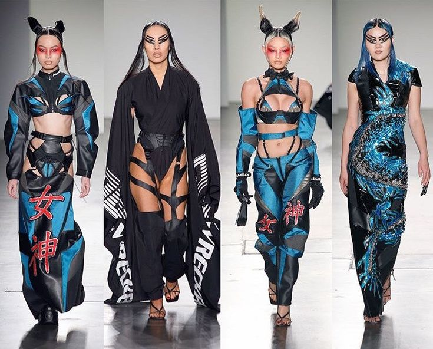
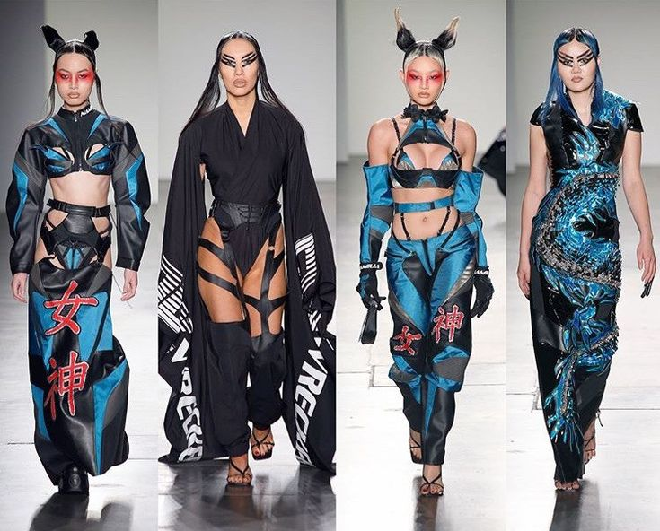
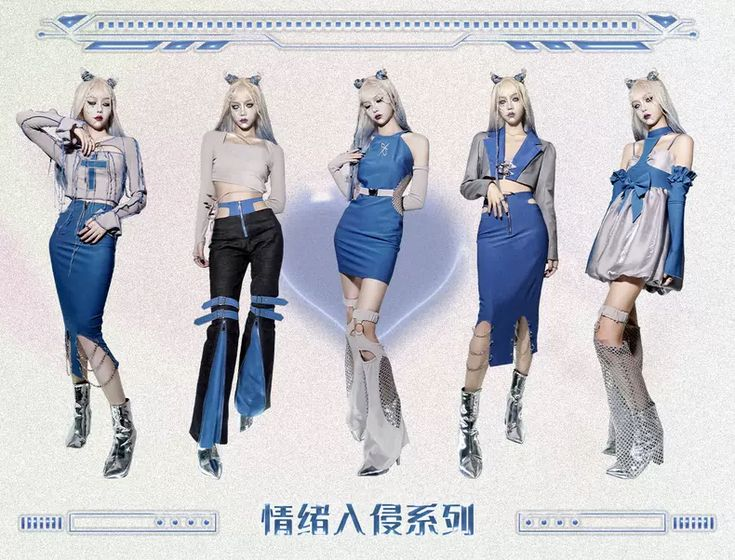
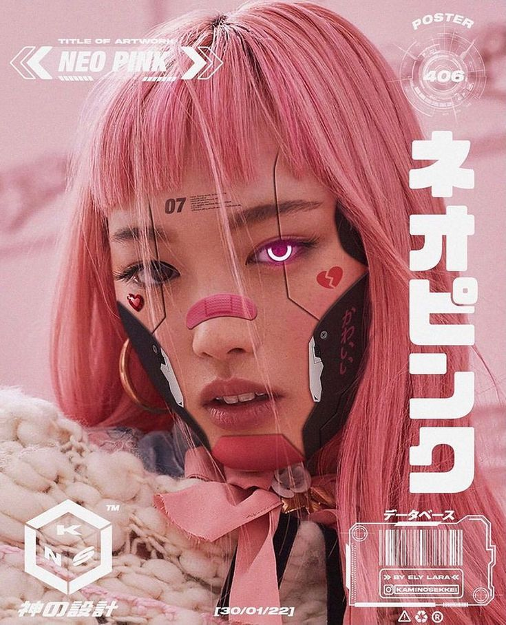
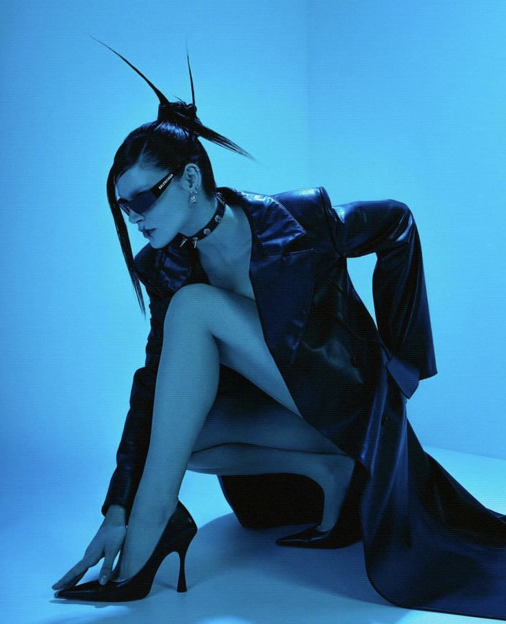
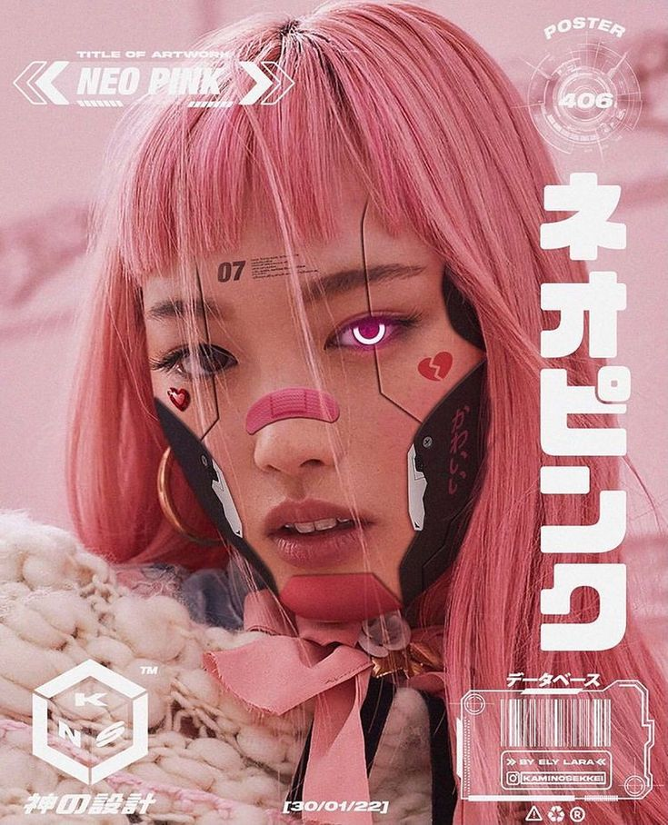
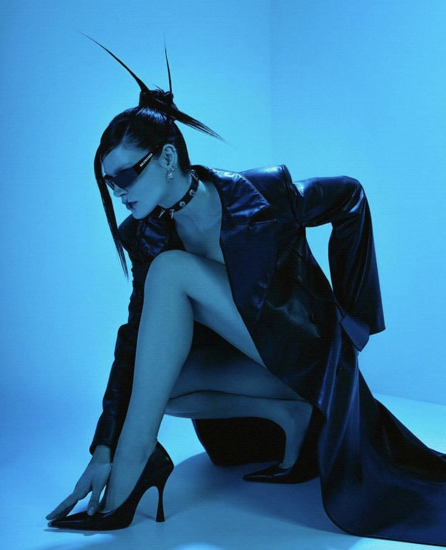

En el CYBERPUNK existen dos posibilidades estéticas, una muy limpia y minimalista y otra más bien descuidada. Dependerá de la obra que estemos consumiendo, el diseñador o la premisa de lo que se presente. El pelo de colores antinaturales, las gafas futuristas, ropas que muestran mucha piel, botas y el oversize son tendencias marcadas dentro de este subgénero.
 

Siguiente Imágen=<>


Siguiente Imágen=<>